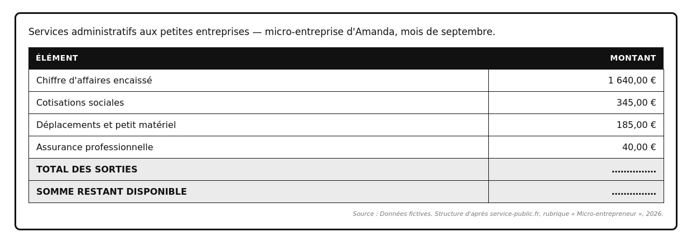
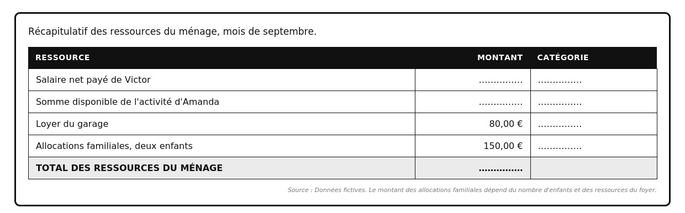

Réglages d’affichage
Le ménage et ses revenus
Reconnaître qui compose un ménage, lire un bulletin de paie, distinguer les trois sortes de revenus et calculer le total des ressources d'un foyer.
Ce qui sera acquis à la fin du chapitre
- Dire qui compose un ménage et pourquoi.
- Lire un bulletin de paie et retrouver ses lignes principales.
- Vérifier qu'un salaire respecte le salaire minimum légal.
- Distinguer un chiffre d'affaires d'un revenu.
- Calculer le total des ressources d'un ménage et la part qui vient du travail.
Séance 1
Le ménage et les revenus du travail
Objectifs : 1. Définir un ménage. 2. Distinguer les différentes formes de revenus d'activité.
La situation
Victor est ouvrier paysagiste. Il travaille en CDI dans une entreprise d'aménagement d'espaces verts, les Jardins du Rhône.
Sa compagne Amanda est micro-entrepreneuse : elle réalise des travaux administratifs pour de petites entreprises. Ils vivent dans le même logement avec leurs deux enfants.
Ce soir, ils remplissent un dossier de demande de prêt. La banque demande : « Indiquez l'ensemble des ressources mensuelles du ménage. »
Victor sort son bulletin de paie. Amanda hésite : elle a encaissé 1 640 € ce mois-ci, mais il ne lui reste pas cette somme.
DOC. 1 — Qu'appelle-t-on un ménage ?
![Document sur la définition du ménage. Phrase d'entrée : au sens du ménage-logement, un ménage est constitué des personnes qui habitent habituellement dans le même logement, qu'elles aient ou non un lien de parenté, et c'est cette définition qui est employée dans ce cours. Trois encadrés. Une personne seule : elle constitue à elle seule un ménage. Des colocataires : sans lien de parenté, ils forment un seul ménage. Un enfant majeur logé ailleurs : il forme un ménage distinct de celui de ses parents, même s'il reste de la famille. Bandeau final, pourquoi cette notion : les banques, les organismes de prestations sociales et l'administration fiscale raisonnent à cette échelle, parce que c'est à l'échelle du logement que se comptent les ressources et les dépenses.](images/revenus_doc1_menage.jpg)
Description écrite du document
Document sur la définition du ménage. Phrase d'entrée : au sens du ménage-logement, un ménage est constitué des personnes qui habitent habituellement dans le même logement, qu'elles aient ou non un lien de parenté, et c'est cette définition qui est employée dans ce cours. Trois encadrés. Une personne seule : elle constitue à elle seule un ménage. Des colocataires : sans lien de parenté, ils forment un seul ménage. Un enfant majeur logé ailleurs : il forme un ménage distinct de celui de ses parents, même s'il reste de la famille. Bandeau final, pourquoi cette notion : les banques, les organismes de prestations sociales et l'administration fiscale raisonnent à cette échelle, parce que c'est à l'échelle du logement que se comptent les ressources et les dépenses.
1. À partir de la situation et du document 1 :
Un indice
La composition du foyer est décrite dans la deuxième ligne de la situation.
Le corrigé
- Quatre personnes : Victor, Amanda et leurs deux enfants.
Explication
La démarche
Compter toutes les personnes qui partagent le logement.
L’erreur fréquente
Compter les deux adultes seulement.
Un indice
Le critère du ménage figure dans la phrase d'entrée du document 1.
Le corrigé
- Il n'habite pas le même logement. Le lien de parenté ne suffit pas : c'est le logement commun qui définit le ménage. Il forme donc un autre ménage.
Explication
La démarche
Nommer le critère retenu, puis dire ce qui n'est pas un critère.
L’erreur fréquente
Répondre « parce qu'il est majeur ». L'âge n'entre pas dans la définition.
Un indice
La raison figure dans le bandeau du bas du document 1.
Le corrigé
- Cette notion permet d'étudier les ressources et les dépenses des personnes qui vivent dans un même logement : c'est l'ensemble du foyer qui paiera le prêt.
Explication
La démarche
Relier le ménage à la mise en commun des ressources et des charges dans un même logement.
L’erreur fréquente
Répondre « parce que c'est plus simple ». Le document donne une raison précise.
DOC. 2 — Quatre façons d'être rémunéré pour son travail
![Document en deux parties. D'abord un tableau à trois colonnes, quatre façons d'être rémunéré pour son travail dans le secteur du paysage : la situation, le nom de la rémunération, qui la verse. Ouvrier paysagiste en CDI dans une entreprise : un salaire, versé par l'employeur. Agent des espaces verts d'une commune, fonctionnaire territorial : un traitement, versé par la collectivité territoriale. Architecte paysagiste installé à son compte, profession libérale : des honoraires, versés par le client sur facture. Micro-entrepreneuse en services administratifs : un chiffre d'affaires, dont il reste une somme disponible après charges, versé par le client sur facture. Ensuite trois encadrés. Le salarié reçoit un salaire ; les cotisations salariales sont prélevées directement sur sa rémunération par l'employeur. Le micro-entrepreneur encaisse un chiffre d'affaires, la somme totale payée par ses clients ; sur cette somme il doit encore régler ses cotisations sociales, ses frais professionnels — carburant, petit matériel, entretien des machines — et son assurance professionnelle ; ce qui reste ensuite est la somme réellement disponible. Dernier encadré : confondre les deux conduit à surestimer fortement ce dont dispose réellement un travailleur indépendant.](images/revenus_doc2_remunerations.jpg)
Description écrite du document
Document en deux parties. D'abord un tableau à trois colonnes, quatre façons d'être rémunéré pour son travail dans le secteur du paysage : la situation, le nom de la rémunération, qui la verse. Ouvrier paysagiste en CDI dans une entreprise : un salaire, versé par l'employeur. Agent des espaces verts d'une commune, fonctionnaire territorial : un traitement, versé par la collectivité territoriale. Architecte paysagiste installé à son compte, profession libérale : des honoraires, versés par le client sur facture. Micro-entrepreneuse en services administratifs : un chiffre d'affaires, dont il reste une somme disponible après charges, versé par le client sur facture. Ensuite trois encadrés. Le salarié reçoit un salaire ; les cotisations salariales sont prélevées directement sur sa rémunération par l'employeur. Le micro-entrepreneur encaisse un chiffre d'affaires, la somme totale payée par ses clients ; sur cette somme il doit encore régler ses cotisations sociales, ses frais professionnels — carburant, petit matériel, entretien des machines — et son assurance professionnelle ; ce qui reste ensuite est la somme réellement disponible. Dernier encadré : confondre les deux conduit à surestimer fortement ce dont dispose réellement un travailleur indépendant.
2. À partir du document 2 :
| Situation | Qui verse la rémunération |
|---|---|
| Ouvrier paysagiste en CDI | |
| Agent des espaces verts d'une commune | |
| Architecte paysagiste à son compte | |
| Micro-entrepreneuse en services administratifs |
Un indice
La troisième colonne du document 2 donne la réponse pour chaque ligne.
Le corrigé
- Payés par un employeur : l'ouvrier paysagiste en CDI et l'agent territorial.
- Payés par leurs clients : l'architecte paysagiste et le jardinier en micro-entreprise.
Explication
La démarche
Une seule question par ligne : qui remet l'argent au travailleur ?
L’erreur fréquente
Classer l'agent territorial avec les indépendants. La collectivité est son employeur.
Un indice
La situation de départ indique le contrat de chacun.
Le corrigé
- Victor : ouvrier paysagiste en CDI, première ligne.
- Amanda : micro-entrepreneuse en services administratifs, dernière ligne.
Explication
La démarche
Reprendre le contrat de chacun dans la situation, puis chercher la ligne qui lui correspond.
L’erreur fréquente
Associer Amanda à la profession libérale. Elle est en micro-entreprise, pas libérale.
DOC. 3 — Le bulletin de paie de Victor, mois de septembre
| Ligne du bulletin | Part du salarié | Part de l'employeur |
|---|---|---|
| Salaire de base (151,67 h) | 1 950,00 € | — |
| Heures supplémentaires | aucune | — |
| Salaire brut | 1 950,00 € | — |
| Cotisation santé | 95,00 € | 165,00 € |
| Cotisation retraite | 225,00 € | 330,00 € |
| Cotisation chômage | 90,00 € | 90,00 € |
| Autres cotisations | — | 105,00 € |
| Total des cotisations | 410,00 € | 690,00 € |
| Net à payer avant impôt (brut − cotisations salariales) | 1 540,00 € | — |
| Impôt sur le revenu prélevé à la source | − 42,00 € | — |
| Net payé (virement du 30 septembre) | 1 498,00 € | — |
| Coût total pour l'employeur (1 950,00 € + 690,00 €) | — | 2 640,00 € |
Congés payés acquis : 12,5 jours · Cumul du brut depuis janvier : 17 550,00 € · Paiement par virement · Organisme : Mutualité sociale agricole.
Version texte du bulletin, en attendant l'illustration.
Description écrite du document
Bulletin de paie de Victor M., ouvrier paysagiste en CDI à temps plein chez Les Jardins du Rhône, pour le mois de septembre. Rémunération : salaire de base pour 151,67 heures, 1 950 euros ; heures supplémentaires, aucune ; salaire brut, 1 950 euros. Cotisations et contributions sociales, part du salarié puis part de l'employeur : santé, 95 euros et 165 euros ; retraite, 225 euros et 330 euros ; chômage, 90 euros et 90 euros ; autres, rien et 105 euros. Total des cotisations : 410 euros pour le salarié, 690 euros pour l'employeur. Net à payer avant impôt sur le revenu, c'est-à-dire salaire brut moins cotisations salariales : 1 540 euros. Impôt sur le revenu prélevé à la source, retenu directement par l'employeur et reversé au Trésor public : moins 42 euros. Net payé en euros, versé par virement le 30 septembre : 1 498 euros. Coût total pour l'employeur, salaire brut 1 950 euros plus cotisations patronales 690 euros : 2 640 euros. En bas : congés payés acquis 12,5 jours ; cumuls depuis janvier, salaire brut 17 550 euros ; paiement par virement, organisme Mutualité sociale agricole.
DOC. 4 — Le SMIC, salaire minimum légal
![Document sur le SMIC, le salaire minimum légal. Aucun employeur ne peut verser moins que le SMIC, le salaire minimum interprofessionnel de croissance ; il est révisé au moins une fois par an, et peut l'être en cours d'année. Deux encadrés. Au 1er juin 2026, par heure : 12,31 euros brut de l'heure. Soit, pour un temps plein : 1 867,02 euros brut par mois, pour 151,67 heures. Bandeau final, comment vérifier : on ne compare pas les montants mensuels ; on calcule le taux horaire brut, en divisant le salaire brut par le nombre d'heures travaillées, puis on le compare au SMIC horaire.](images/revenus_doc4_smic.jpg)
Description écrite du document
Document sur le SMIC, le salaire minimum légal. Aucun employeur ne peut verser moins que le SMIC, le salaire minimum interprofessionnel de croissance ; il est révisé au moins une fois par an, et peut l'être en cours d'année. Deux encadrés. Au 1er juin 2026, par heure : 12,31 euros brut de l'heure. Soit, pour un temps plein : 1 867,02 euros brut par mois, pour 151,67 heures. Bandeau final, comment vérifier : on ne compare pas les montants mensuels ; on calcule le taux horaire brut, en divisant le salaire brut par le nombre d'heures travaillées, puis on le compare au SMIC horaire.
3. À partir des documents 3 et 4 :
Un indice
Les trois montants sont écrits en gros caractères sur le bulletin de paie.
Le corrigé
- Salaire brut : 1 950,00 €
- Net payé : 1 498,00 €
- Coût total pour l'employeur : 2 640,00 €
Explication
La démarche
Relever veut dire recopier. Les trois montants figurent tels quels sur le document 3.
L’erreur fréquente
Confondre le net avant impôt, 1 540 €, et le net payé, 1 498 €.
Salaire brut 1 950,00 € · net payé 1 498,00 €.
Un indice
Les deux montants sont rappelés au-dessus de la consigne.
Le corrigé
- 1 950,00 − 1 498,00 = 452,00 €
Explication
La démarche
Retirer le net payé au salaire brut.
L’erreur fréquente
Inverser les deux termes et obtenir un résultat négatif.
Un indice
Les deux lignes figurent sur le bulletin, entre le salaire brut et le net payé.
Le corrigé
- Les cotisations salariales : 410,00 €
- Le prélèvement à la source de l'impôt sur le revenu : 42,00 €
Explication
La démarche
Additionner les deux montants relevés donne bien 452 €.
L’erreur fréquente
Répondre « les charges ». Le bulletin nomme les deux prélèvements séparément.
Un indice
Le nombre d'heures figure sur la ligne du salaire de base du bulletin.
Le corrigé
- 1 950,00 ÷ 151,67 = 12,86 € brut de l'heure
Explication
La démarche
Diviser le salaire brut par le nombre d'heures travaillées.
L’erreur fréquente
Diviser le net payé au lieu du brut. Le SMIC se compare en brut.
Le taux horaire de Victor est de 12,86 €. Le SMIC horaire brut est de 12,31 €.
Un indice
Le document 4 dit avec quel montant la comparaison se fait.
Le corrigé
- L'employeur respecte le SMIC : 12,86 € est supérieur à 12,31 €.
Explication
La démarche
Comparer le taux horaire trouvé au SMIC horaire, et non les montants mensuels.
L’erreur fréquente
Comparer 1 950 € et 1 867,02 €. La comparaison se fait sur le taux horaire.
Le lexique de la séance 1
- Ménage
- Au sens du ménage-logement : ensemble des personnes habitant habituellement le même logement, avec ou sans lien de parenté.
- Salaire brut
- Rémunération du salarié avant retrait des cotisations et de l'impôt.
- Chiffre d'affaires
- Total encaissé auprès des clients par un indépendant, avant toute charge.
Vocabulaire d’appui
- Cotisations salariales
- Sommes retirées du salaire brut pour financer la santé, la retraite et le chômage.
- Net payé
- Somme réellement versée sur le compte du salarié.
- SMIC
- Salaire minimum légal en dessous duquel aucun employeur ne peut rémunérer un salarié.
- Traitement
- Nom de la rémunération d'un fonctionnaire.
- Honoraires
- Nom de la rémunération d'une profession libérale, versée par le client.
- Taux horaire brut
- Salaire brut divisé par le nombre d'heures travaillées.
Auto-évaluation de la séance 1
1. Deux colocataires sans lien de parenté forment un seul ménage. Répondre en cochant une case.
Le corrigé. Vrai
Explication. Le critère est le logement habituel commun, pas la parenté.
2. Indiquer le nom de la rémunération d'un architecte paysagiste installé à son compte, en cochant une seule case.
Le corrigé. Des honoraires
Explication. Elle est versée par le client, sur facture.
3. Indiquer la ligne qui ne figure pas sur un bulletin de paie, en cochant une seule case.
Le corrigé. Le chiffre d'affaires
Explication. Le chiffre d'affaires concerne un indépendant, pas un salarié.
4. Indiquer ce qu'un micro-entrepreneur doit encore régler sur son chiffre d'affaires, en cochant plusieurs cases.
Le corrigé. Ses cotisations sociales, Ses frais professionnels, Son assurance professionnelle
Explication. Un micro-entrepreneur n'a pas d'employeur.
5. Expliquer comment vérifier qu'un salaire respecte le SMIC, en rédigeant une phrase.
Le corrigé. On divise le salaire brut par le nombre d'heures travaillées, puis on compare le résultat au SMIC horaire.
Explication. La comparaison se fait toujours sur le taux horaire brut, jamais sur le montant mensuel.
Score : —
Séance 2
Les autres ressources du ménage
Objectifs : 1. Distinguer revenus d'activité, revenus du capital et revenus de transfert. 2. Calculer le total des ressources d'un ménage.
La situation
Le conseiller bancaire rappelle Victor et Amanda : le dossier est incomplet.
« Vous n'avez indiqué que le salaire. Il me faut aussi la somme disponible de votre activité indépendante, les revenus de votre patrimoine, et les prestations que vous percevez. »
Amanda sort son relevé du mois. Victor cherche la quittance du garage qu'ils louent à un voisin, et l'attestation de la caisse qui verse les allocations pour leurs deux enfants.
DOC. 5 — Le relevé d'activité d'Amanda, mois de septembre

Description écrite du document
Tableau du relevé d'activité d'Amanda, services administratifs aux petites entreprises en micro-entreprise, mois de septembre, à deux colonnes : l'élément et le montant. Chiffre d'affaires encaissé, 1 640 euros. Cotisations sociales, 345 euros. Carburant et petit matériel, 185 euros. Assurance professionnelle, 40 euros. Deux dernières lignes à compléter : le total des sorties, et la somme restant disponible.
1. À partir du document 5 :
Un indice
Les trois sorties sont les trois lignes situées sous le chiffre d'affaires.
Le corrigé
- 345,00 + 185,00 + 40,00 = 570,00 €
Explication
La démarche
Additionner les cotisations, les frais professionnels et l'assurance.
L’erreur fréquente
Inclure le chiffre d'affaires dans l'addition. Ce n'est pas une sortie.
Chiffre d'affaires encaissé 1 640,00 € · total des sorties 570,00 €.
Un indice
Les deux montants sont rappelés au-dessus de la consigne.
Le corrigé
- 1 640,00 − 570,00 = 1 070,00 €
Explication
La démarche
Retirer le total des sorties au chiffre d'affaires encaissé.
L’erreur fréquente
Additionner les deux montants au lieu de les soustraire.
Un indice
Le document 2 distingue le chiffre d'affaires et la somme réellement disponible.
Le corrigé
- Les 1 640 € sont un chiffre d'affaires, pas un revenu : une fois ses cotisations et ses frais professionnels réglés, il ne lui reste que 1 070 €, soit 570 € de moins.
Explication
La démarche
Mobiliser la distinction entre chiffre d'affaires et somme disponible, puis l'appuyer sur les deux montants.
L’erreur fréquente
Répondre « parce qu'elle gagne moins ». Il faut nommer la distinction et donner l'écart.
DOC. 6 — Les revenus du capital et les revenus de transfert
![Document en deux encadrés, suivis d'un bandeau. Phrase d'entrée : tout ce qui entre dans un ménage ne provient pas du travail. Premier encadré, les revenus du capital : ils proviennent de ce que l'on possède ; le loyer d'un logement ou d'un garage mis en location, les intérêts d'un livret d'épargne, les revenus de placements. Deuxième encadré, les revenus de transfert : ils sont versés par la collectivité, sans contrepartie de travail immédiate, pour couvrir une charge ou une perte de ressources ; les allocations familiales, à partir de deux enfants à charge ; les allocations chômage, après une perte d'emploi ; le revenu de solidarité active ; l'allocation aux adultes handicapés ; les pensions de retraite. Bandeau final, qui verse ici : dans le secteur agricole et paysager, pour les personnes relevant du régime agricole, les prestations familiales peuvent être versées par la Mutualité sociale agricole.](images/revenus_doc6_capital_transfert.jpg)
Description écrite du document
Document en deux encadrés, suivis d'un bandeau. Phrase d'entrée : tout ce qui entre dans un ménage ne provient pas du travail. Premier encadré, les revenus du capital : ils proviennent de ce que l'on possède ; le loyer d'un logement ou d'un garage mis en location, les intérêts d'un livret d'épargne, les revenus de placements. Deuxième encadré, les revenus de transfert : ils sont versés par la collectivité, sans contrepartie de travail immédiate, pour couvrir une charge ou une perte de ressources ; les allocations familiales, à partir de deux enfants à charge ; les allocations chômage, après une perte d'emploi ; le revenu de solidarité active ; l'allocation aux adultes handicapés ; les pensions de retraite. Bandeau final, qui verse ici : dans le secteur agricole et paysager, pour les personnes relevant du régime agricole, les prestations familiales peuvent être versées par la Mutualité sociale agricole.
2. À partir du document 6 :
| Ressource | Catégorie de revenu |
|---|---|
| Le salaire net de Victor | |
| Le loyer du garage | |
| Les allocations familiales | |
| La somme restant à Amanda | |
| Les intérêts d'un livret d'épargne | |
| Une pension de retraite |
Un indice
Le document 6 définit les revenus du capital et les revenus de transfert. Ce qui n'entre dans aucun des deux vient du travail.
Le corrigé
- Revenus d'activité : le salaire net de Victor · la somme disponible de l'activité d'Amanda
- Revenus du capital : le loyer du garage · les intérêts d'un livret
- Revenus de transfert : les allocations familiales · une pension de retraite
Explication
La démarche
Une seule question par ligne : cette somme vient-elle du travail, de ce que l'on possède, ou de la collectivité ?
L’erreur fréquente
Classer la somme disponible d'Amanda hors des revenus d'activité. C'est le fruit de son travail.
DOC. 7 — Récapitulatif des ressources du ménage

Description écrite du document
Tableau récapitulatif des ressources du ménage pour le mois de septembre, à trois colonnes : la ressource, le montant, la catégorie. Salaire net payé de Victor : montant et catégorie à compléter. Somme restant à Amanda : montant et catégorie à compléter. Loyer du garage : 80 euros, catégorie à compléter. Allocations familiales pour deux enfants : 150 euros, catégorie à compléter. Dernière ligne : total des ressources du ménage, à compléter.
3. À partir du document 7 :
Le salaire net de Victor est de 1 498,00 €. La somme disponible de l'activité d'Amanda a été trouvée à la question 1.2.
RéponseUn indice
Le premier montant vient du bulletin de paie, le second de la question 1.2.
Le corrigé
- Salaire net de Victor : 1 498,00 €
- Somme disponible de l'activité d'Amanda : 1 070,00 €
Explication
La démarche
Recopier deux résultats déjà obtenus, sans les recalculer.
L’erreur fréquente
Reporter le net avant impôt, 1 540 €, au lieu du net payé.
Un indice
Les trois catégories sont celles du classement de la question 2.1.
Le corrigé
- Salaire net de Victor : revenu d'activité
- Somme restant à Amanda : revenu d'activité
- Loyer du garage : revenu du capital
- Allocations familiales : revenu de transfert
Explication
La démarche
Réutiliser les trois catégories du document 6, une par ressource.
L’erreur fréquente
Classer le loyer du garage en revenu d'activité. Il vient d'un bien possédé, pas d'un travail.
Salaire net 1 498,00 € · somme restant à Amanda 1 070,00 € · loyer du garage 80,00 € · allocations familiales 150,00 €.
Un indice
Les quatre montants sont rappelés au-dessus de la consigne.
Le corrigé
- 1 498,00 + 1 070,00 + 80,00 + 150,00 = 2 798,00 €
Explication
La démarche
Additionner les quatre ressources, quelle que soit leur catégorie.
L’erreur fréquente
N'additionner que les revenus d'activité. La banque demande l'ensemble des ressources.
4. À partir de tout ce qui précède :
Revenus d'activité : 1 498,00 € et 1 070,00 €. Total des ressources : 2 798,00 €.
Un indice
Un pourcentage se calcule en divisant la partie par le total, puis en multipliant par 100.
Le corrigé
- Revenus d'activité : 1 498,00 + 1 070,00 = 2 568,00 €
- 2 568,00 ÷ 2 798,00 × 100 = 91,8, soit environ 92 %
Explication
La démarche
Additionner d'abord les deux revenus du travail, puis diviser par le total et multiplier par 100.
L’erreur fréquente
Diviser le total par les revenus d'activité. On obtient alors un nombre inférieur à 1.
Un indice
Un pourcentage proche de 100 signale que presque tout vient de la même origine.
Le corrigé
- Environ 92 % des ressources du ménage proviennent de l'activité professionnelle de Victor et d'Amanda. Le ménage dépend donc fortement de leurs revenus d'activité.
Explication
La démarche
Traduire le pourcentage en degré de dépendance, sans aller au-delà de ce que les chiffres montrent.
L’erreur fréquente
Conclure que le budget serait déséquilibré. Le chapitre ne donne pas les dépenses du ménage.
Chiffre d'affaires encaissé par Amanda 1 640,00 € · total de ses sorties 570,00 € · somme disponible 1 070,00 €.
Un indice
Les trois montants sont rappelés au-dessus de la consigne.
Le corrigé
- Amanda a encaissé 1 640 €, mais 570 € partent en cotisations, en frais professionnels et en assurance. Il lui reste donc 1 070 € disponibles pour le ménage.
Explication
La démarche
Nommer les deux montants : ce qui est encaissé, et ce qui part en charges. La différence est ce qui reste.
L’erreur fréquente
Annoncer 1 640 € à la banque. Le chiffre d'affaires n'est pas une ressource du ménage.
Le lexique de la séance 2
- Revenu d'activité
- Revenu tiré du travail : salaire, traitement, honoraires, revenu d'une micro-entreprise.
- Revenu du capital
- Revenu tiré de ce que l'on possède : loyer perçu, intérêts d'un livret.
- Revenu de transfert
- Somme versée par la collectivité pour couvrir une charge ou une perte de ressources.
Vocabulaire d’appui
- Prestation familiale
- Aide versée aux familles ayant des enfants à charge.
- Mutualité sociale agricole
- Organisme de protection sociale du régime agricole, qui peut verser les prestations familiales de ses affiliés.
- Frais professionnels
- Dépenses engagées pour exercer son activité : carburant, matériel, entretien.
Auto-évaluation de la séance 2
1. Le chiffre d'affaires d'un micro-entrepreneur correspond à ce qui lui reste réellement. Répondre en cochant une case.
Le corrigé. Faux
Explication. Il doit encore régler ses cotisations, ses frais professionnels et son assurance.
2. Indiquer la catégorie du loyer d'un garage mis en location, en cochant une seule case.
Le corrigé. Revenu du capital
Explication. Il provient d'un bien possédé, pas d'un travail.
3. Indiquer l'élément qui n'est pas un revenu de transfert, en cochant une seule case.
Le corrigé. Des honoraires
Explication. Les honoraires viennent du travail, versés par un client.
4. Indiquer les ressources qui relèvent du travail, en cochant plusieurs cases.
Le corrigé. Le salaire net de Victor, Le revenu de la micro-entreprise d'Amanda
Explication. Les deux autres relèvent du capital et du transfert.
5. Expliquer ce qu'est un revenu de transfert, en rédigeant une phrase.
Le corrigé. Une somme versée par la collectivité pour couvrir une charge ou une perte de ressources, sans contrepartie de travail immédiate.
Explication. C'est ce qui le distingue d'un revenu d'activité, qui suppose un travail.
Score : —